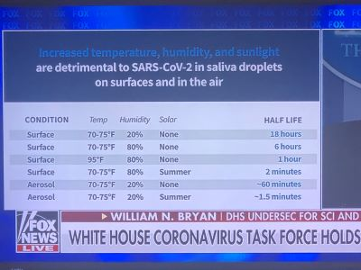

Home, WA
My idea got confirmed today!!!
I had this idea early March. Here is my idea in a long version.
———-
About coronavirus, I would like to suggest a way to prevent the public spreading. I heard that coronavirus will be dead when the weather gets warmer. In summer, the virus would stop spreading.
I think that we should find out whether this is true. If raising couple of degrees of room temperature could stop or slow down or shorten the distance of virus from spreading, we should advise the public to do so in all public in-door area.
It would be a quick, easy and cost efficient way to stop the virus spreading.
————

×